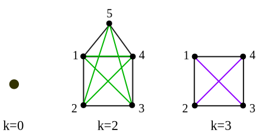
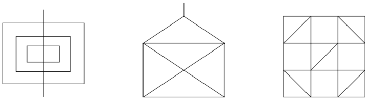

MAC5770 - Introdução à Teoria dos Grafos Exercise List 3
Vanessa Martinez Tonini. NºUSP 10855034
10.04.2019
Exercise 3.1.2
Let $G$ be a graph with vertex set $V$ and adjacency matrix $A = (a_{uv})$. Show that the number of $uv$-walks of length $k$ in $G$ is the $(u,v)$ entry of $A^k$.
Sendo $G$ um grafo com um conjunto de vértices $V$ e matriz de adjacência $A = (a_{uv})$. Mostre que o número de $uv$-walks de tamanho $k$ em $G$ é um valor $(u,v)$ de $A^k$.
Por definição de matriz de adjacência $a_{ij}=1$ se existe uma caminhada de comprimento 1 entre $v_i$ e $v_j$, caso contrário $a_{ij}=0$.
Hipótese de indução
Seja $b_{ij}=A^n$, $b_{ij}$ representa a quantidade de caminhadas de comprimento $n$ entre $v_i$ e $v_j$.
Tese de indução
Deixemos mostrar que o número de caminhadas de comprimento $n+1$ entre $v_i$ e $v_j$ é a $(i,j)$ entrada de $A^{n+1}$
Seja $A^{n+1} = c_{ij}$
$$
c_{ij} = A^{n+1} = (A^{n+1})_{ij} = \sum_{m=1}^n a_{im} b_{mj}
$$
$b_{mj}$ é o número de caminhadas de comprimento $n$ entre $v_m$ e $v_j$.
$a_{im}$ é o número de caminhadas de comprimento 1 entre $v_i$ e $v_m$.
Assim $\sum_{m=1}^n a_{im} b_{mj}$ representa quantidade de caminhadas de comprimento $n+1$ entre $v_i$ e $v_j$.
Exercise 3.1.5
Show that, in any graph $G$, the distance function satisfies the triangle inequality: for any three vertices $x$, $y$, and $z$, $d(x, y) + d(y, z) \geq d(x, z)$.
Mostre que, em qualquer grafo $G$, a função de distância atende a desigualdade triangular: para cada três vértices $x$, $y$, e $z$, $d(x, y) + d(y, z) \geq d(x, z)$.
Prova
O número inteiro $d(x, y) + d(y, z)$ representa o comprimento de um caminho de $x$ a $z$ passando por $y$. Porém, por definição de distância, o menor caminho de $x$ a $z$ tem comprimento $d(x,z)$. Desta forma, podemos concluir que $d(x, y) + d(y, z) \geq d(x,z)$.
Exercise 3.1.7 - Diameter
The diameter of a graph $G$ is the greatest distance between two vertices of $G$.
O diâmetro de um grafo $G$ é a maior distância entre dois vértices de $G$.
Let $G$ be a simple graph of diameter greater than three. Show that $\overline{G}$ has diameter less than three.
Sendo $G$ um grafo simples de diâmetro maior que três. Mostre que $\overline{G}$ tem o diâmetro menor que três.
Definição:
Dizemos que um grafo $G$ tem a propriedade $X$, se e somente se para toda aresta $xy \in E$ existe um vértice em $V$ que não adjacente à $x$ ou $y$.
Proposição:
Se um grafo tem a propriedade $X$ então seu complementar tem diâmetro de no máximo 2.
Prova
Seja $x$ e $y$ $\in V(G)$. Se
$x$ e $y$ não são adjacentes, então $d_{\overline{G}}(x,y) = 1$
Se $x$ e $y$ forem adjacentes então, como $G$ tem a propriedade $X$, existe um $z$ tal que $xz$
e $yz \notin E(G)$ então $xz$ e $yz \in E(\overline G)$.
Portanto, existe um caminho de comprimento 2 entre $x$ e $y$ em $\overline{G}$, logo
$d_{\overline{G}}(x,y)=2$.
Dado o exposto, podemos concluir que $D(\overline{G})\leq 2$.
Proposição:
Se $D(G) > 3$ então o grafo $G$ tem a propriedade $X$.
Prova
Se o grafo $G$ for desconexo, então $G$ pode ser decomposto em componentes conexas, de forma que, as extremiades de cada aresta em uma componente, não são adjacentes a qualquer vértice de outra componente. Desta forma, se $G$ for desconexo, então, $G$ possui a propriedade $X$.
Suponhamos agora que o grafo $G$ seja conexo e $D(G)>3$. Portanto, existe um caminho de comprimento 4 em $G$, denotamos esse caminho por $xyzwt$. Observamos que o vértice $x$ não pode ser adjacente a $z$, $w$ ou $t$, o vértice $y$ não pode ser adjacente a $w$ ou $t$ e o vértice $z$ não pode ser adjacente a $t$, caso contrário, o caminho entre $x$ e $t$ teria comprimento menor que 4. Portanto, as arestas $xy$,$yz$,$zw$,$wt$ satisfazem o requisito da Definição anterior em relação aos vértices $w$, $t$, $x$, $y$, respectivamente.
Seja $uv$ qualquer outra aresta do grafo, mostraremos que as extremidades de $uv$ não são
adjancentes a $x$ ou $t$.
Se as extremidades de $uv$ não são adjancentes a $x$, então a prova está terminada. Caso
contrário, suponhamos, sem perda de generalidade,
que $u$ seja adjacente a $x$, portanto, $u$ não pode ser adjacente a $t$ senão teríamos um
caminho de comprimento 2 entre $x$ e $t$, e ainda,
$v$ não pode ser adjacente a $t$, caso contrário, teríamos um caminho de comprimento 3 entre $x$
e $t$. Desta forma, s extremidades de $uv$ não são adjancentes a $x$ ou $t$.
Portanto, podemos concluir que se $D(G) > 3$ então o grafo $G$ tem a propriedade $X$.
Dos resultados obtidos, podemos concluir que se um um grafo $G$ tem diâmetro maior que 3, então, seu complementar tem diâmetro de no máximo 2, o que conclui a prova.
Deduce that every self-complementary graph has diameter at most three.
Deduza que cada grafo auto-complementar* tem um diâmetro de pelo menos três.
*auto-complementar: isomorfo ao seu complemento
Seja $G$ uma grafo auto-complementar. Devemos mostrar que $D(G)\leq 3$. Suponhamos, por absurdo, que $D(G)>3$. De acordo com o resultado anterior $D(G)>3 \Rightarrow D(\overline{G}) \leq 3 $. Por outro lado, como $G$ e $\overline{G}$ são isomorfos, $D(G)>3 \Rightarrow D(\overline{G})> 3 $, portanto, temos uma contradição.
For $k = 0, 1, 2, 3$, give an example of self-complementary graph of diameter $k$, if there is one.
Para $k = 0, 1, 2, 3$, dê um exemplo de um grafo auto-complementar com diâmetro $k$, se existir um.
A figura abaixo mostra grafos auto-complementares com diâmetros 0,2 e 3, respectivamente. O único grafo com diâmetro 1 é o grafo completo $K_n$ que possui $\frac{n(n-1)}{4}$ arestas. Esse grafo não é auto-complemetar, pois seu complemento possui 0 arestas e sabemos que para um grafo ser auto-complementar é necessário que $|E(G)|=|E(\overline{G})|$. Portanto, não existe um grafo auto-complementar de diâmetro 1.

Exercise 3.1.10
If the girth of a graph is at least $2k$, show that its diameter is at least $k$.
Se o perímetro de um grafo é ao menos $2k$, mostre que seu diâmetro é pelo menos $k$
Prova
Denotamos $g=girth(G)$ e $d=diameter(G)$.
Devemos mostrar que se $g \geq 2k$ então $d \geq k$. Suponhamos, por contradição, que $d \leq k-1 $.
Seja $C$ um ciclo em $G$ de comprimento mínimo $g$, com vértices consecutivos $x_0,x_1,\cdots ,x_{g-1}$.
Denotamos por $P_C$ o menor caminho ao longo de $C$ com extremidades $x_0$ e $x_k$. Notamos que quando $g>2k$ esse caminho é definido de forma única, enquanto para, $g=2k$ existem dois caminhos mais curtos. De qualquer forma, podemos sempre escolher $P_C$ como sendo o caminho de vértices consecutivos $x_0,x_1,\cdots,x_k$ de comprimento $k$.
Seja $t=dist_{G}(x_0,x_{k})$ e seja $P$ um caminho em $G$ de $x_0$ a $x_k$ com vértices consecutivos $y_0(=x_0),y_1,\cdots, y_t(=x_k)$. Por definição de diâmetro, $t\leq d$, e pela hipótese de contradição, temos que $t\leq k-1$.
Construiremos matematicamente um ciclo no grafo e mostraremos que tal ciclo possui comprimento menor que $g$, o que implicará o resultado. Seja $j$ o menor valor para o qual $y_j \neq x_j$ (isto implica que $x_s=y_s$, $\forall s \leq j$). Esse $j$ deve existir, caso contrário, teríamos $P=P_C$, uma contradição já que $P$ e $P_C$ têm comprimentos diferentes. Agora, dentre o valores estritamente maiores que j, seja $i$ o valor mínimo para o qual $y_i$ está contido em $P_C$. Esse i deve existir porque $y_t (=x_k)$ está em $P_C$. Desta forma, $y_i=x_m$ para algum $m \leq k$. Suponhamos que $m \leq j $. Então $y_i=x_m=y_m$. O que é uma contradição, já que $i>j>m$, e em um caminho não pode haver vértices repetidos. Portanto, concluímos que $m>j-1$.
Agora, podemos construir o ciclo com vértices consecutivos $y_j, y_{j+1},..., y_i(=x_m), x_{m-1}, x_{m-2},\cdots,x_{j-1}(=y_{j-1})$. O comprimento deste ciclo é menor que g. De fato, notando que $x_{j − 1}, x_j,\cdots, x_m$ é uma parte do caminho $P_C$, portanto, seu comprimento é no máximo $k$. Observamos também que $y_{j − 1}, y_j, \cdots ,y_i$ é uma parte do caminho $P$, portanto, seu comprimento é no máximo $k-1$. Assim, este ciclo tem um comprimento máximo de $2k-1$ que é menor que $g$ (pois, por hipótese, $g \geq 2k$ ), uma contradição com a nossa suposição de que $C$ é um ciclo de comprimento mínimo.
Exercise 3.3.1
Which of the pictures in Figure 1 can be drawn without lifting one’s pen from the paper and without tracing a line more than once? Please give reasons for each of
Qual dos desenhos abaixo na Figura 1 podem ser desenhadas sem levantar a caneta do papel e sem passar a linha mais de uma vez. Por favor explique as razões de cada uma:

Figure 1. Tracing Pictures
Respostas
Teorema:
Um grafo conexo $G$ é Euleriano se, e somente se, cada vértice de $G$ possui grau par.
Prova:
Suponhamos que $G$ seja Euleriano, então existe em $G$ um circuito Euleriano, que denotamos por $C$. Seja $v$ um vértice qualquer de $G$. Conforme percorremos o circuito $C$, devemos entrar e deixar $v$ o mesmo número de vezes. Segue-se que, $deg(v)$ deve ser um múltiplo de 2 e, portanto, deve ser par. Por outro lado, suponhamos que cada vértice do grafo conexo $G$ possua grau par, mostraremos por indução sobre o número de arestas, $m$, que $G$ possui um ciclo Euleriano. O caso base, é para $m=3$ e o grau de cada vértice 2, o grafo é o ciclo $C_3$ que é trivialmente um circuito Euleriano. Suponhamos o resultado válido para $k \leq m$ arestas, ou seja, todo grafo conexo com $k \leq m$ arestas, onde todos os vértices tem grau par, possui um circuito Euleriano. Mostraremos que um grafo conexo com $m$ arestas, onde todos os vértices tem grau par, possui um circuito Euleriano. Como $deg(v)> 1$ para todo $v$ em $G$, podemos concluir que $G$ possui um ciclo. Seja $C$ um ciclo em $G$, removemos as arestas em $C$ de $G$ e denotamos por $E_0$ o grafo resultante. Quando removemos as arestas em $C$ de $G$, cada vértice perde um número par de arestas adjacentes e, portanto sua paridade não é alterada. A remoção das arestas de $C$ pode desconectar o grafo, assim, $E_0$ é uma coleção de componentes conexas $E_1, E_2, ⋯ , E_k$ que satisfazem a hipótese de indução, e portanto, possuem um circuito Euleriano. Agora construiremos um cicuito Euleriano em $G$. Seja $u$ um vértice qualquer de $C$. Percorremos $C$ até chegarmos a um vértice que pertence a uma das componentes conexas de $E_0$. Então, percorremos seu circuito Euleriano até atravessarmos todas as bordas. Estamos agora de volta ao ciclo, e assim podemos continuar ao longo de $C$, até que retornar-mos ao vértice de partida $u$, passando por cada aresta exatamente uma vez.
Corolário:
Um grafo conexo $G$ possui uma trilha Euleriana se, e somente se, $G$ possui 0 ou 2 vértices de grauímpar.
Prova
Suponhamos que um grafo conexo $G$ possua uma trilha Euleriana $P$. Para cada vértice do grafo $G$, a trilha $P$ deve entrar e deixar o vértice o mesmo número de vezes, com excessão das extremidades da trilha. Quando as extremidades são distintas, $G$ possui exatamente dois vértices de grau ímpar, e quando as extremidades são iguais, não há vétices de grau ímpar. Por outro lado, suponhamos que o grafo $G$ possua 2 vértices de grau ímpar $x$ e $y$ (o caso 0 foi provado no teorema anterior). Se adicionarmos a arestas $xy$ em $G$, o grafo não conterá vértices de grau ímpar, pelo teorema anterior, o grafo conterá um circuito Euleriano. Agora, se removermos a aresta $xy$ teremos uma trila Euleriana com extremidades em $x$ e $y$.
Como o primeiro e o terceiro grafo da Figura 1 possuem exatamente 2 vértices de grau ímpar, pelo corolário anterior, podemos concluir que possuem uma trilha Euleriana. O segunda grafo da Figura 1 possui 4 vértices de grau ímpar, portanto, não possui uma trilha Euleriana.